Etymology
Tokyo was originally known as Edo (江戸), which means "estuary". Its name was changed to Tokyo (東京 Tōkyō, 東 tō "east", and 京 kyō "capital") when it became the imperial capital with the arrival of Emperor Meiji in 1868, in line with the East Asian tradition of including the word capital (京) in the name of the capital city (like Kyoto (京都), Beijing (北京) and Nanjing (南京)). During the early Meiji period, the city was also called "Tōkei", an alternative pronunciation for the same characters representing "Tokyo", making it a kanji homograph. Some surviving official English documents use the spelling "Tokei however, this pronunciation is now obsolete.
...............................................................................................................................................................................................................................................................
History
Tokyo was originally a small fishing village named Edo, in what was formerly part of the old Musashi Province. Edo was first fortified by the Edo clan, in the late twelfth century. In 1457, Ōta Dōkan built Edo Castle. In 1590, Tokugawa Ieyasu was transferred from Mikawa Province (his lifelong base) to Kantō region. When he became shōgun in 1603, Edo became the center of his ruling. During the subsequent Edo period, Edo grew into one of the largest cities in the world with a population topping one million by the 18th century. But Edo was Tokugawa's home and was not capital of Japan. (That was caused by the Meiji Restoration in 1868.) The Emperor himself lived in Kyoto from 794 to 1868 as capital of Japan. During the Edo era, the city enjoyed a prolonged period of peace known as the Pax Tokugawa, and in the presence of such peace, Edo adopted a stringent policy of seclusion, which helped to perpetuate the lack of any serious military threat to the city. The absence of war-inflicted devastation allowed Edo to devote the majority of its resources to rebuilding in the wake of the consistent fires, earthquakes, and other devastating natural disasters that plagued the city. However, this prolonged period of seclusion came to an end with the arrival of American Commodore Matthew C. Perry in 1853. Commodore Perry forced the opening of the ports of Shimoda and Hakodate, leading to an increase in the demand for new foreign goods and subsequently a severe rise in inflation. Social unrest mounted in the wake of these higher prices and culminated in widespread rebellions and demonstrations, especially in the form of the "smashing" of rice establishments. Meanwhile, supporters of the Meiji Emperor leveraged the disruption that these widespread rebellious demonstrations were causing to further consolidate power by overthrowing the last Tokugawa shōgun, Yoshinobu, in 1867. After 265 years, the Pax Tokugawa came to an end.
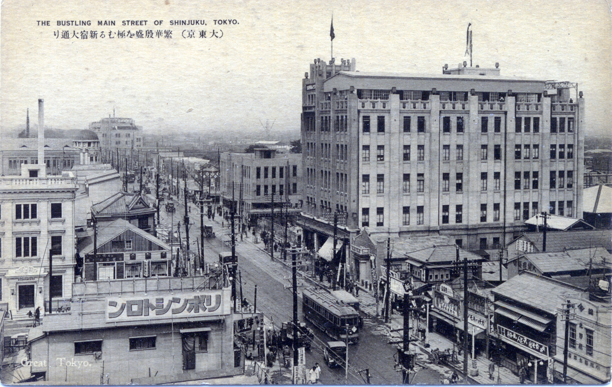In 1869, the 17-year-old Emperor Meiji moved to Edo, and in accordance, the city was renamed Tokyo (meaning Eastern Capital). The city was divided into Yamanote and Shitamachi. Tokyo was already the nation's political and cultural center, and the emperor's residence made it a de facto imperial capital as well, with the former Edo Castle becoming the Imperial Palace. The city of Tokyo was officially established on May 1, 1889. Central Tokyo, like Osaka, has been designed since about 1900 to be centered on major railway stations in a high-density fashion, so suburban railways were built relatively cheaply at street level and with their own right-of-way. Though expressways have been built in Tokyo, the basic design has not changed. Tokyo went on to suffer two major catastrophes in the 20th century: the 1923 Great Kantō earthquake, which left 140,000 dead or missing; and World War II.
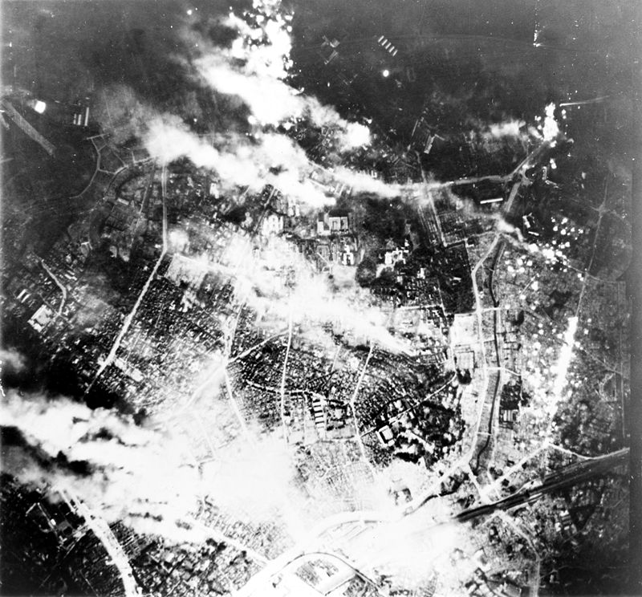1943–present Tokyo burning in 1945 In 1943, the city of Tokyo merged with the prefecture of Tokyo to form the "Metropolitan Prefecture" of Tokyo. Since then, the Tokyo Metropolitan Government served as both the prefecture government for Tokyo, as well as administering the special wards of Tokyo, for what had previously been Tokyo City. World War II wrought widespread destruction of most of the city due to the persistent Allied air raids on Japan and the use of incendiary bombs. The bombing of Tokyo in 1944 and 1945 is estimated to have killed between 75,000 and 200,000 civilians and left more than half of the city destroyed.[38] The deadliest night of the war came on March 9–10, 1945, the night of the American "Operation Meetinghouse" as nearly 700,000 incendiary bombs rained on the eastern half of the city, mainly in heavily residential wards. Two-fifths of the city were completely burned, more than 276,000 buildings were demolished, 100,000 civilians were killed, and 110,000 more were injured. Between 1940 and 1945, the population of Japan's capital city dwindled from 6,700,000 to less than 2,800,000, with the majority of those who lost their homes living in "ramshackle, makeshift huts".
The Tokyo Tower, built in 1958 The 2011 Tōhoku earthquake did slight damage to the antenna of Tokyo Tower.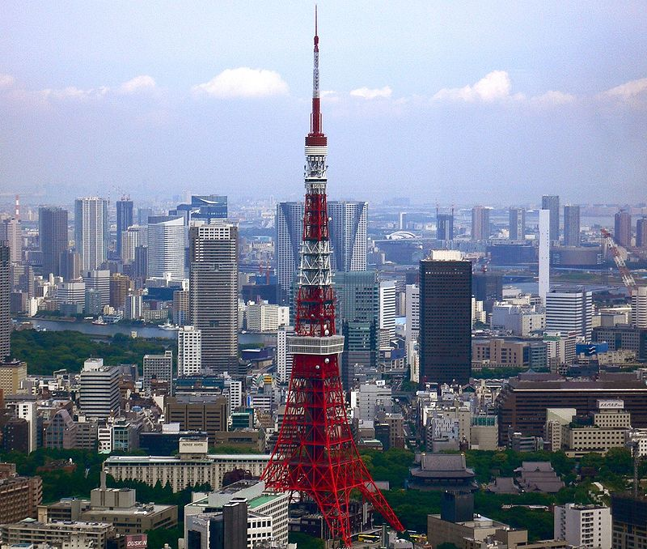
After the war, Tokyo was completely rebuilt and was showcased to the world during the 1964 Summer Olympics. The 1970s brought new high-rise developments such as Sunshine 60, a new and controversial airport at Narita in 1978 (some distance outside city limits), and a population increase to about 11 million (in the metropolitan area). Tokyo's subway and commuter rail network became one of the busiest in the world as more and more people moved to the area. In the 1980s, real estate prices skyrocketed during a real estate and debt bubble. The bubble burst in the early 1990s, and many companies, banks, and individuals were caught with mortgage-backed debts while real estate was shrinking in value. A major recession followed, making the 1990s Japan's "Lost Decade",from which it is now slowly recovering. Tokyo still sees new urban developments on large lots of less profitable land. Recent projects include Ebisu Garden Place, Tennōzu Isle, Shiodome, Roppongi Hills, Shinagawa (now also a Shinkansen station), and the Marunouchi side of Tokyo Station. Buildings of significance have been demolished for more up-to-date shopping facilities such as Omotesando Hills. Land reclamation projects in Tokyo have also been going on for centuries. The most prominent is the Odaiba area, now a major shopping and entertainment center. Various plans have been proposed for transferring national government functions from Tokyo to secondary capitals in other regions of Japan, in order to slow down rapid development in Tokyo and revitalize economically lagging areas of the country. These plans have been controversial within Japan and have yet to be realized. The 2011 Tōhoku earthquake and tsunami that devastated much of the northeastern coast of Honshu was felt in Tokyo. However, due to Tokyo's earthquake-resistant infrastructure, damage in Tokyo was very minor compared to areas directly hit by the tsunami, although activity in the city was largely halted. The subsequent nuclear crisis caused by the tsunami has also largely left Tokyo unaffected, despite occasional spikes in radiation levels. On September 7, 2013, the IOC selected Tokyo to host the 2020 Summer Olympics. Tokyo will be the first Asian city to host the Olympic Games twice.
...............................................................................................................................................................................................................................................................
Geography
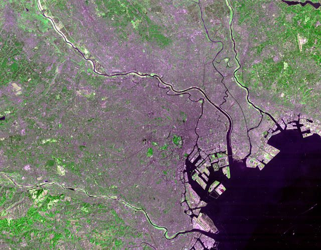The mainland portion of Tokyo lies northwest of Tokyo Bay and measures about 90 km (56 mi) east to west and 25 km (16 mi) north to south. The average elevation in Tokyo is 40 m (131 ft). Chiba Prefecture borders it to the east, Yamanashi to the west, Kanagawa to the south, and Saitama to the north. Mainland Tokyo is further subdivided into the special wards (occupying the eastern half) and the Tama area (多摩地域) stretching westwards. Also within the administrative boundaries of Tokyo Metropolis are two island chains in the Pacific Ocean directly south: the Izu Islands, and the Ogasawara Islands, which stretch more than 1,000 km (620 mi) away from the mainland. Because of these islands and the mountainous regions to the west, Tokyo's overall population density figures far under-represent the real figures for the urban and suburban regions of Tokyo. Under Japanese law, Tokyo is designated as a to (都), translated as metropolis. Its administrative structure is similar to that of Japan's other prefectures. The 23 special wards (特別区 tokubetsu-ku), which until 1943 constituted the city of Tokyo, are self-governing municipalities, each having a mayor, a council, and the status of a city. In addition to these 23 special wards, Tokyo also includes 26 more cities (市 -shi), five towns (町 -chō or machi), and eight villages (村 -son or -mura), each of which has a local government. The Tokyo Metropolitan Government administers the whole metropolis including the 23 special wards and the cities and towns that constitute the prefecture. It is headed by a publicly elected governor and metropolitan assembly. Its headquarters is located in Shinjuku Ward.
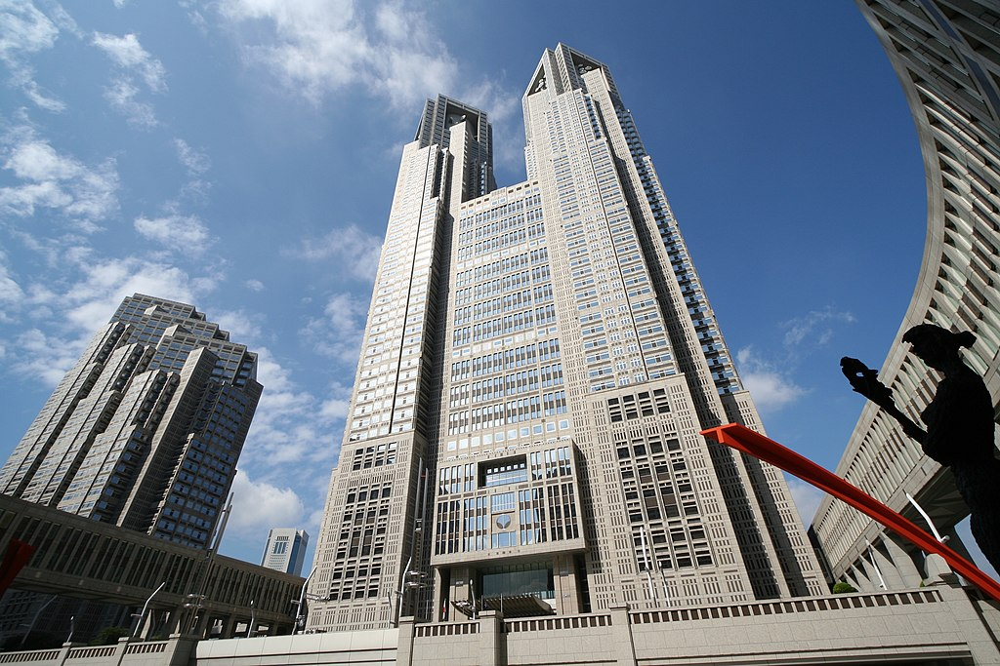Tokyo Metropolitan Government Building
...............................................................................................................................................................................................................................................................
Environment
Tokyo has enacted a measure to cut greenhouse gases. Governor Shintaro Ishihara created Japan's first emissions cap system, aiming to reduce greenhouse gas emission by a total of 25% by 2020 from the 2000 level. Tokyo is an example of an urban heat island, and the phenomenon is especially serious in its special wards. According to the Tokyo Metropolitan Government, the annual mean temperature has increased by about 3 °C (5.4 °F) over the past 100 years. Tokyo has been cited as a "convincing example of the relationship between urban growth and climate. In 2006, Tokyo enacted the "10 Year Project for Green Tokyo" to be realised by 2016. It set a goal of increasing roadside trees in Tokyo to 1 million (from 480,000), and adding 1,000 ha of green space 88 of which will be a new park named "Umi no Mori" (sea forest) which will be on a reclaimed island in Tokyo Bay which used to be a landfill. From 2007 to 2010, 436 ha of the planned 1,000 ha of green space was created and 220,000 trees were planted bringing the total to 700,000. In 2014, road side trees in Tokyo have increased to 950,000, and a further 300 ha of green space has been added.
...............................................................................................................................................................................................................................................................
Economy
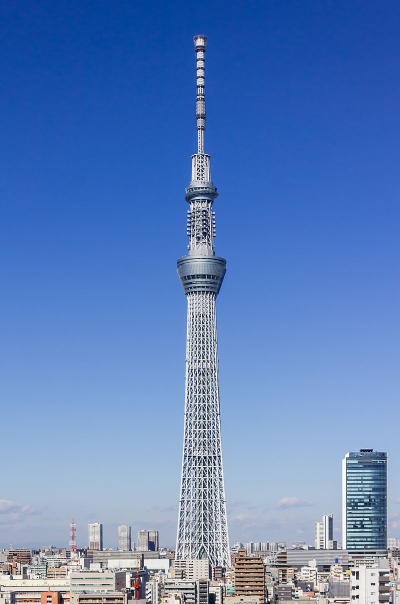 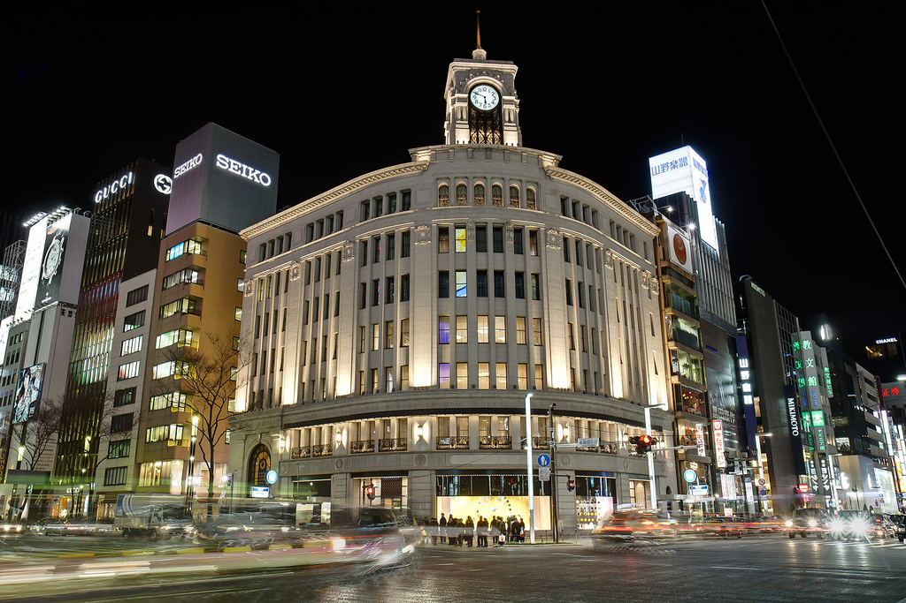 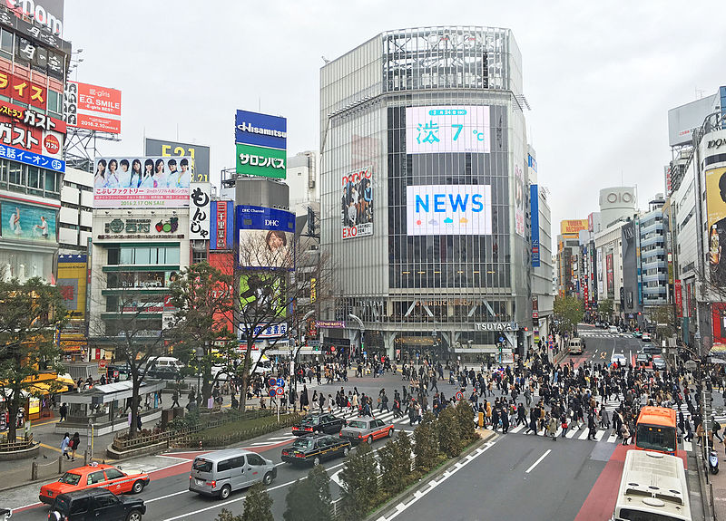Tokyo has the largest metropolitan economy in the world. According to a study conducted by PricewaterhouseCoopers, the Greater Tokyo Area (Tokyo-Yokohama) of 38 million people had a total GDP of $2 trillion in 2012 (at purchasing power parity), which topped that list. Tokyo is a major international finance center; it houses the headquarters of several of the world's largest investment banks and insurance companies, and serves as a hub for Japan's transportation, publishing, electronics and broadcasting industries. During the centralized growth of Japan's economy following World War II, many large firms moved their headquarters from cities such as Osaka (the historical commercial capital) to Tokyo, in an attempt to take advantage of better access to the government. This trend has begun to slow due to ongoing population growth in Tokyo and the high cost of living there. Tokyo was rated by the Economist Intelligence Unit as the most expensive (highest cost-of-living) city in the world for 14 years in a row ending in 2006. Tokyo emerged as a leading international financial center (IFC) in the 1960s and has been described as one of the three "command centers" for the world economy, along with New York City and London. In the 2017 Global Financial Centres Index, Tokyo was ranked as having the fifth most competitive financial center in the world (alongside cities such as London, New York City, San Francisco, Chicago, Sydney, Boston, and Toronto in the top 10), and third most competitive in Asia (after Singapore and Hong Kong). The Japanese financial market opened up slowly in 1984 and accelerated its internationalisation with the "Japanese Big Bang" in 1998. Despite the emergence of Singapore and Hong Kong as competing financial centers, the Tokyo IFC manages to keep a prominent position in Asia. The Tokyo Stock Exchange is Japan's largest stock exchange, and third largest in the world by market capitalization and fourth largest by share turnover. In 1990 at the end of the Japanese asset price bubble, it accounted for more than 60% of the world stock market value. Tokyo had 8,460 ha (20,900 acres) of agricultural land as of 2003, according to the Ministry of Agriculture, Forestry and Fisheries, placing it last among the nation's prefectures. The farmland is concentrated in Western Tokyo. Perishables such as vegetables, fruits, and flowers can be conveniently shipped to the markets in the eastern part of the prefecture. Komatsuna and spinach are the most important vegetables; as of 2000, Tokyo supplied 32.5% of the komatsuna sold at its central produce market. With 36% of its area covered by forest, Tokyo has extensive growths of cryptomeria and Japanese cypress, especially in the mountainous western communities of Akiruno, Ōme, Okutama, Hachiōji, Hinode, and Hinohara. Decreases in the price of timber, increases in the cost of production, and advancing old age among the forestry population have resulted in a decline in Tokyo's output. In addition, pollen, especially from cryptomeria, is a major allergen for the nearby population centers. Tokyo Bay was once a major source of fish. Most of Tokyo's fish production comes from the outer islands, such as Izu Ōshima and Hachijō-Jima. Skipjack tuna, nori, and aji are among the ocean products. Tourism in Tokyo is also a contributor to the economy. In 2006, 4.81 million foreigners and 420 million Japanese visits to Tokyo were made; the economic value of these visits totaled 9.4 trillion yen according to the Tokyo Metropolitan Government. Many tourists visit the various downtowns, stores, and entertainment districts throughout the neighborhoods of the special wards of Tokyo; particularly for school children on class trips, a visit to Tokyo Tower is de rigueur. Cultural offerings include both omnipresent Japanese pop culture and associated districts such as Shibuya and Harajuku, subcultural attractions such as Studio Ghibli anime center, as well as museums like the Tokyo National Museum, which houses 37% of the country's artwork national treasures (87/233). The Tsukiji Fish Market in Tokyo is the biggest wholesale fish and seafood market in the world, and also one of the largest wholesale food markets of any kind. The Tsukiji market holds strong to the traditions of its predecessor, the Nihonbashi fish market, and serves some 50,000 buyers and sellers every day. Retailers, whole-sellers, auctioneers, and public citizens alike frequent the market, creating a unique microcosm of organized chaos that still continues to fuel the city and its food supply after over four centuries. It moved to the new Toyosu Market in October 2018.
...............................................................................................................................................................................................................................................................
Transportation
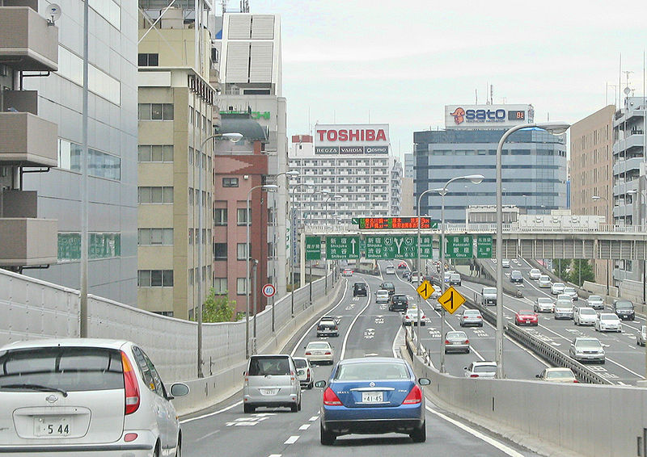 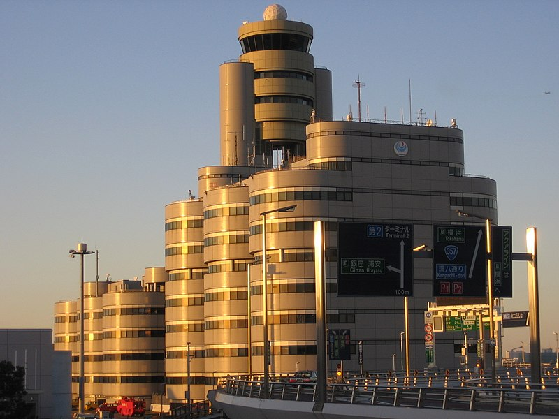 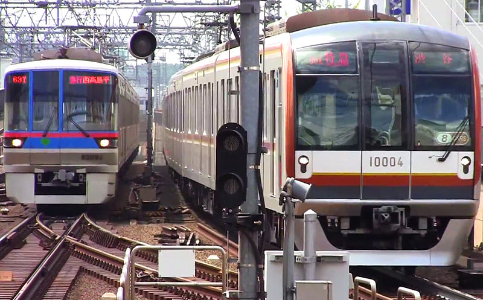Tokyo, as the center of the Greater Tokyo Area, is Japan's largest domestic and international hub for rail and ground. However, its airspace has been under the US military's exclusive rights after World War II and some flight routes are returned to Japan. Public transportation within Tokyo is dominated by an extensive network of clean and efficient trains and subways run by a variety of operators, with buses, monorails and trams playing a secondary feeder role. There are up to 62 electric train lines and more than 900 train stations in Tokyo. As a result of World War II, Japanese planes are forbidden to fly over Tokyo. Therefore, Japan constructed airports outside Tokyo. Narita International Airport in Chiba Prefecture is the major gateway for international travelers to Japan. Japan's flag carrier Japan Airlines, as well All Nippon Airways, have a hub at this airport. Haneda Airport on the reclaimed land at Ōta, offers domestic and international flights. Various islands governed by Tokyo have their own airports. Hachijō-jima (Hachijojima Airport), Miyakejima (Miyakejima Airport), and Izu Ōshima (Oshima Airport) have services to Tokyo International and other airports. Rail is the primary mode of transportation in Tokyo, which has the most extensive urban railway network in the world and an equally extensive network of surface lines. JR East operates Tokyo's largest railway network, including the Yamanote Line loop that circles the center of downtown Tokyo. Two different organizations operate the subway network: the private Tokyo Metro and the governmental Tokyo Metropolitan Bureau of Transportation. The Metropolitan Government and private carriers operate bus routes and one tram route. Local, regional, and national services are available, with major terminals at the giant railroad stations, including Tokyo, Shinagawa, and Shinjuku. Expressways link the capital to other points in the Greater Tokyo area, the Kantō region, and the islands of Kyushu and Shikoku. In order to build them quickly before the 1964 Summer Olympics, most were constructed above existing roads. Other transportation includes taxis operating in the special wards and the cities and towns. Also, long-distance ferries serve the islands of Tokyo and carry passengers and cargo to domestic and foreign ports.
...............................................................................................................................................................................................................................................................
Sports
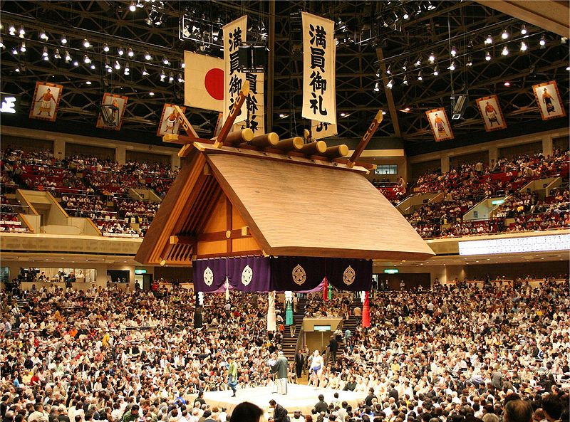 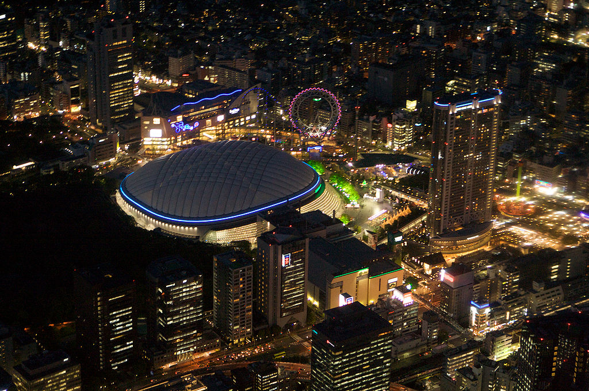Tokyo, with a diverse array of sports, is home to two professional baseball clubs, the Yomiuri Giants who play at the Tokyo Dome and Tokyo Yakult Swallows at Meiji-Jingu Stadium. The Japan Sumo Association is also headquartered in Tokyo at the Ryōgoku Kokugikan sumo arena where three official sumo tournaments are held annually (in January, May, and September). Football clubs in Tokyo include F.C. Tokyo and Tokyo Verdy 1969, both of which play at Ajinomoto Stadium in Chōfu, and FC Machida Zelvia at Nozuta Stadium in Machida. Basketball clubs include the Hitachi SunRockers, Toyota Alvark Tokyo and Tokyo Excellence. Tokyo hosted the 1964 Summer Olympics, thus becoming the first Asian city to host the Summer Games. The National Stadium, also known as the Olympic Stadium, was host to a number of international sporting events. In 2016, it was to be replaced by the New National Stadium. With a number of world-class sports venues, Tokyo often hosts national and international sporting events such as basketball tournaments, women's volleyball tournaments, tennis tournaments, swim meets, marathons, rugby union and sevens rugby games, football, American football exhibition games, judo, and karate. Tokyo Metropolitan Gymnasium, in Sendagaya, Shibuya, is a large sports complex that includes swimming pools, training rooms, and a large indoor arena. According to Around the Rings, the gymnasium has played host to the October 2011 artistic gymnastics world championships, despite the International Gymnastics Federation's initial doubt in Tokyo's ability to host the championships following the March 11 tsunami.[110] Tokyo also selected to host a number of games for the 2019 Rugby World Cup Tokyo was selected to host the 2020 Summer Olympics and the 2020 Summer Paralympics on September 7, 2013.
...............................................................................................................................................................................................................................................................